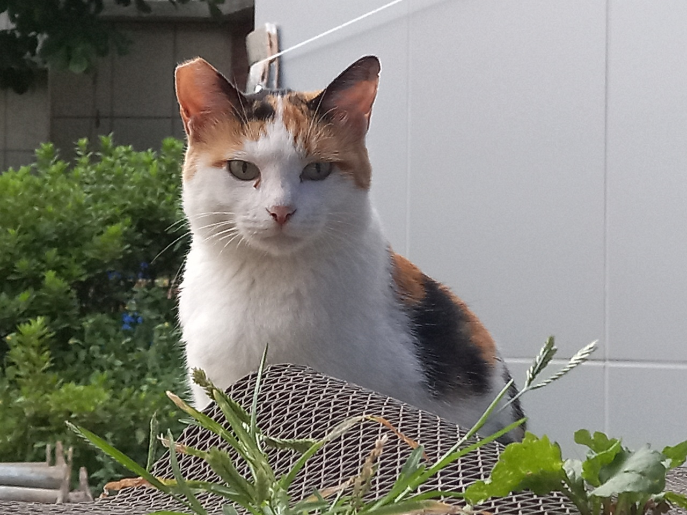
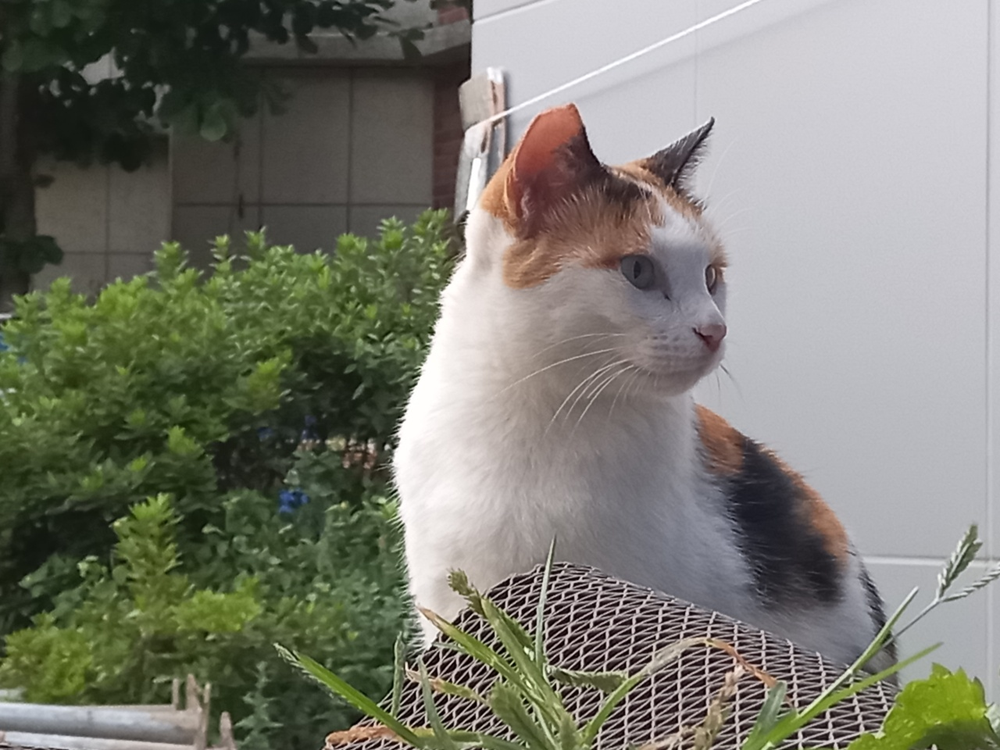
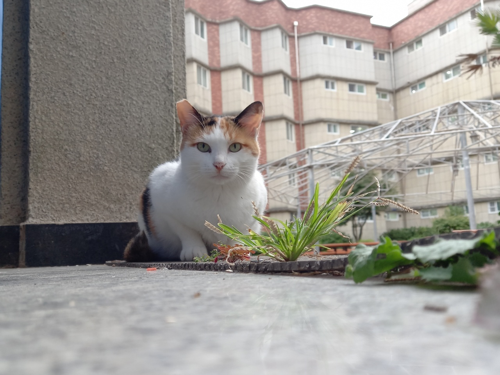

이 웹은 오작공원에 등장하는 크사냥이를 다룹니다.
삼색이
한과영에 온 지 2년째인 암컷 고양이. 현재는 중성화 상태이다. 기관에서 중성화되었기 때문에 오른쪽 귀가 살짝 잘려있다. 오작공원에 서식하는 또 다른 고양이인 냥냥이와는 다르게 사람 손을 타지 않고 경계하는 모습을 보인다. 나이가 그렇게 많지 않은지, 냥냥이에 비해 잘 뛰어다닌다. 서열은 냥냥이보다 낮아서 밥을 먹을 때 주로 냥냥이가 먹은 후 먹는다. 그래도 같이 먹을 때도 많다. 적정거리는 조심스럽게 다가갔을 때 1m 정도이다. 상당히 미묘이며, 사진을 찍었을 때 잘 나온다. 직녀관 입구에 있는 고양이 장난감으로 삼색이와 놀아줄 수 있고, 가림막 사이로 손을 넣어 놀아줄 수도 있다. 다만 후자는 손이 긁히거나 할퀴어질 위험이 있으므로 고양이 장난감으로 놀아주는 것을 추천한다. 장난감을 챙기려고 문을 열 때 간식을 주는 줄 알고 삼색이와 냥냥이 둘 다 다가오기 때문에 너무 자주 하지는 않는 것이 좋다.


